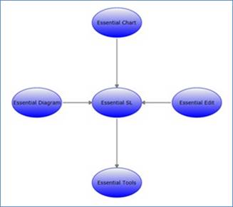

The Essential Diagram Silverlight allows the user to manually specify the layout of the page. The nodes can be positioned at any point on the diagram page. The OffsetX and OffsetY properties can be used to specify the position. Connections can then be made between the nodes using the various line connectors.
The nodes and the connectors need to be added to the Nodes and Connections collection of DiagramModel respectively. This gives a complete control over the placement of nodes on the page and enables the user to create diagrams as suited for their business needs.
The following code snippet shows how the manual layout may be specified.
|
[C#]
Node EssentialSL = new Node(Guid.NewGuid(), "EssentialSL"); EssentialSL.Shape = Shapes.Ellipse; EssentialSL.Width = 125; EssentialSL.Height = 75; EssentialSL.OffsetX = 300; EssentialSL.OffsetY = 300; EssentialSL.Content = "Essential SL";
Node EssentialTools = new Node(Guid.NewGuid(), "EssentialTools"); EssentialTools.Shape = Shapes.Ellipse; EssentialTools.Width = 125; EssentialTools.Height = 75; EssentialTools.OffsetX = 300; EssentialTools.OffsetY = 500; EssentialTools.Content = "Essential Tools";
Node EssentialChart = new Node(Guid.NewGuid(), "EssentialChart"); EssentialChart.Shape = Shapes.Ellipse; EssentialChart.Width = 125; EssentialChart.Height = 75; EssentialChart.OffsetX = 300; EssentialChart.OffsetY = 100; EssentialChart.Content = "Essential Chart";
Node EssentialDiagram = new Node(Guid.NewGuid(), "EssentialDiagram"); EssentialDiagram.Shape = Shapes.Ellipse; EssentialDiagram.Width = 125; EssentialDiagram.Height = 75; EssentialDiagram.OffsetX = 100; EssentialDiagram.OffsetY = 300; EssentialDiagram.Content = "Essential Diagram";
Node EssentialEdit = new Node(Guid.NewGuid(), "EssentialEdit"); EssentialEdit.Shape = Shapes.Ellipse; EssentialEdit.Width = 125; EssentialEdit.Height = 75; EssentialEdit.OffsetX = 500; EssentialEdit.OffsetY = 300; EssentialEdit.Content = "Essential Edit";
// Adding the nodes to the Diagram Model. diagramModel.Nodes.Add(EssentialSL); diagramModel.Nodes.Add(EssentialTools); diagramModel.Nodes.Add(EssentialChart); diagramModel.Nodes.Add(EssentialDiagram); diagramModel.Nodes.Add(EssentialEdit);
// Making Connections between the nodes. LineConnector Connectionone = new LineConnector(); Connectionone.Name = "conn1"; Connectionone.ConnectorType = ConnectorType.Straight; Connectionone.TailNode = EssentialTools; Connectionone.HeadNode = EssentialSL;
LineConnector ConnectionTwo = new LineConnector(); ConnectionTwo.Name = "conn2"; ConnectionTwo.ConnectorType = ConnectorType.Straight; ConnectionTwo.TailNode = EssentialSL; ConnectionTwo.HeadNode = EssentialChart;
LineConnector ConnectionThree = new LineConnector(); ConnectionThree.Name = "conn3"; ConnectionThree.ConnectorType = ConnectorType.Straight; ConnectionThree.TailNode = EssentialSL; ConnectionThree.HeadNode = EssentialDiagram;
LineConnector ConnectionFour = new LineConnector(); ConnectionFour.Name = "conn4"; ConnectionFour.ConnectorType = ConnectorType.Straight; ConnectionFour.TailNode = EssentialSL; ConnectionFour.HeadNode = EssentialEdit;
// Adding the connections to the Model. diagramModel.Connections.Add(Connectionone); diagramModel.Connections.Add(ConnectionTwo); diagramModel.Connections.Add(ConnectionThree); diagramModel.Connections.Add(ConnectionFour); |
|
[VB]
Dim EssentialSL As New Node(Guid.NewGuid(), "EssentialSL") EssentialSL.Shape = Shapes.Ellipse EssentialSL.Width = 125 EssentialSL.Height = 75 EssentialSL.OffsetX = 300 EssentialSL.OffsetY = 300 EssentialSL.Content = "Essential SL"
Dim EssentialTools As New Node(Guid.NewGuid(), "EssentialTools") EssentialTools.Shape = Shapes.Ellipse EssentialTools.Width = 125 EssentialTools.Height = 75 EssentialTools.OffsetX = 300 EssentialTools.OffsetY = 500 EssentialTools.Content = "Essential Tools"
Dim EssentialChart As New Node(Guid.NewGuid(), "EssentialChart") EssentialChart.Shape = Shapes.Ellipse EssentialChart.Width = 125 EssentialChart.Height = 75 EssentialChart.OffsetX = 300 EssentialChart.OffsetY = 100 EssentialChart.Content = "Essential Chart"
Dim EssentialDiagram As New Node(Guid.NewGuid(), "EssentialDiagram") EssentialDiagram.Shape = Shapes.Ellipse EssentialDiagram.Width = 125 EssentialDiagram.Height = 75 EssentialDiagram.OffsetX = 100 EssentialDiagram.OffsetY = 300 EssentialDiagram.Content = "Essential Diagram"
Dim EssentialEdit As New Node(Guid.NewGuid(), "EssentialEdit") EssentialEdit.Shape = Shapes.Ellipse EssentialEdit.Width = 125 EssentialEdit.Height = 75 EssentialEdit.OffsetX = 500 EssentialEdit.OffsetY = 300 EssentialEdit.Content = "Essential Edit"
'Adding the nodes to the Diagram Model. diagramModel.Nodes.Add(EssentialSL) diagramModel.Nodes.Add(EssentialTools) diagramModel.Nodes.Add(EssentialChart) diagramModel.Nodes.Add(EssentialDiagram) diagramModel.Nodes.Add(EssentialEdit)
'Making Connections between the nodes. Dim Connectionone As New LineConnector() Connectionone.Name = "conn1" Connectionone.ConnectorType = ConnectorType.Straight Connectionone.TailNode = EssentialTools Connectionone.HeadNode = EssentialSL
Dim ConnectionTwo As New LineConnector() ConnectionTwo.Name = "conn2" ConnectionTwo.ConnectorType = ConnectorType.Straight ConnectionTwo.TailNode = EssentialSL ConnectionTwo.HeadNode = EssentialChart
Dim ConnectionThree As New LineConnector() ConnectionThree.Name = "conn3" ConnectionThree.ConnectorType = ConnectorType.Straight ConnectionThree.TailNode = EssentialSL ConnectionThree.HeadNode = EssentialDiagram
Dim ConnectionFour As New LineConnector() ConnectionFour.Name = "conn4" ConnectionFour.ConnectorType = ConnectorType.Straight ConnectionFour.TailNode = EssentialSL ConnectionFour.HeadNode = EssentialEdit
'Adding the connections to the Model. diagramModel.Connections.Add(Connectionone) diagramModel.Connections.Add(ConnectionTwo) diagramModel.Connections.Add(ConnectionThree) diagramModel.Connections.Add(ConnectionFour) |

Figure 17: Manual Layout